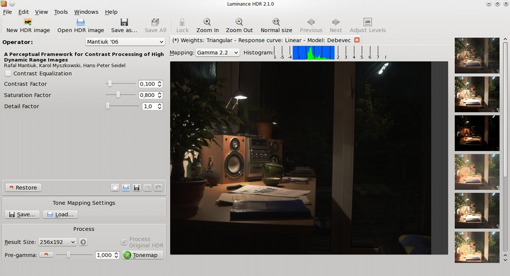

Luminance HDR Manual
- Introduction
- Summary of features
- Using Luminance HDR
- The main window
- The menubar
- The toolbar
- The workspace
- Visualization of an HDR
- Operations on an HDR
- The Creation of an HDR
- The menu reference
Introduction
Luminance HDR is an open source graphical user interface application that provides a workflow for HDR imaging.
Summary of features
Current supported features include:
- Create an HDR from a set of files.
- Tone map an HDR image to get a LDR image.
- Save and load HDR images.
- Rotate and resize HDR images.
- Apply projective transformations to HDR images.
- Copy exif data between sets of images.
The first feature is accessible via the "File -> New Hdr..." wizard: in order to create an HDR the user can either load a set of JPEG files, a set of RAW files, or a set of TIFF files (8bit or 16bit).
Raw files are processed with LibRaw in order to obtain a (8 or 16 bit) tiff file. For more information read this page.
The pictures must have been taken at the same scene, with different exposure settings (change the exposure time and/or aperture, and use a tripod if you have one). The newly created HDR will be available in the workspace as soon as the HDR creation wizard has ended.
The input files can be aligned via two alignment engines: align_image_stack and MTB.
The set of images can contain moving objects. This can result in an (unwanted) effect called ghosting. Luminance HDR provides an interactive anti-ghosting tool that can help avoid such artifacts.
Read the chapter about the creation of an hdr for more information about the alignment engines and the interactive anti-ghosting tool.
To tone map an HDR file to get an LDR image (second feature) you can press the "Tonemap the HDR" button.
Via the "File -> Open Hdr..." wizard you can choose to load in the workspace an HDR image image file, and the "File->Save Hdr as..." item lets you save the currently selected hdr image to a HDR image file format (third feature).
Users can also rotate and resize (fourth feature) the currently selected hdr image via the "Image" menu item, see below.
It is also possible to apply panoramic (projective) transformation to a Hdr image via the "Image" menu item (fifth feature).
In order to create an HDR image Luminance HDR requires to have a set of images with exif data in it. Luminance HDR requires this information to get the exposure settings for an image in the set. When Luminance HDR doesn't find this information in an image it warns the user and aborts the hdr creation process. To cope with this requirement Luminance HDR provides a panel that performs a one-to-one copy of the exif data between two sets of files (sixth feature).
Using Luminance HDR
This chapter describes the most important elements of Luminance HDR: the Main window, the "New Hdr..." wizard procedure, the Resize tool, the interactive tone mapping window, the batch tone mapping , the copy exif data tool and the Preferences panel.
The main window
Here's the main window that you can see once the program has launched and an image has been loaded.

The menubar
At the very top you can see the menubar which, as its name implies, contains the various menus. When an item in a menu is "grayed out" it means that you cannot use (because it doesn't make sense) that particular function at that time. For example you cannot tone map an HDR unless you have at least one HDR image loaded in the workspace.
In case the text describing an item in a menu is not clear enough, below you can find a complete reference of all the items contained in all the menus.
The toolbar
Below the menubar you can see the toolbar. It simply contains some of the most frequently used functions listed in the menus: "New HDR...", "Open HDR...", "Save as...", "Save All" and "Exit". Again, if an item is "grayed out" it means that you cannot use (because it doesn't make sense) that particular function at that time.
The workspace
The main gray area is the workspace. Here you can see all the HDR images which you can work on. As soon as the program is launched the workspace is empty. To have an HDR in the workspace you can either load an existing one (File->Open Hdr...) or create a new one (File->New Hdr...).
Visualization of an HDR
All of the visualization options do not modify the current HDR, they are only a visualization tool.
In the picture above you can see what an HDR image looks like once it is loaded in the workspace.
From left to right, in an HDR image titlebar you can see:
- A gamma combobox, which changes the visualization brightness.
- The green histogram with its blue "histogram selection" (you can use the mouse to drag it and/or move its boundaries).
In the View menu you can find the visualization options, which fall in 2 categories:
- Zoom options: (These are: View->Fit to window, Normal size, Zoom in, Zoom out).
- Histogram options: (all under: View->HDR Histogram->...)
The zoom options are self explanatory, they deal with the fitting of the HDR in its containing window.
The histogram options require more explanation: we somehow have to visualize an HDR image on a CRT or LCD, even if they can only show a normal LDR with 8 bit per color channel. So a simple "luminosity compression" algorithm is performed.
The problem is that when an HDR has a "wide" histogram, (a high gamut of dynamic range) its not possible, even with this (simple) "luminosity compression" algorithm, to show correctly at the same time all the regions of different luminosity in the image (this indeed would be the tone mapping's job).
So you may ask: "Why do we need this tool?"
The answer is that, for example, you may want to visualize correctly all the regions of luminosity of your HDR image by:
- narrowing down the range of the visible histogram (View->HDR Histogram->Low Dynamic Range)
- dragging repeatedly the blue rectangle over the different areas of the green histogram.
Operations on an HDR
As soon as at least one HDR image has been loaded in the workspace you can:
- Save it (File->Save Hdr as...): This is useful when you have just created an HDR from a set of JPEGs (or RAWs or TIFFs) via the "File->New Hdr..." wizard.
- Tone map it (Image->Tonemap the Hdr...): Tone mapping an HDR involves showing another window, called "Interactive Tone Mapping window" which uses the HDR as a source to create an LDR.
The Menu reference
In this section you can find a complete reference describing what all the items in the menu do.
- File -> New Hdr...
- launches a wizard that enables you to create an HDR starting from either a set of JPEGs or a set of RAWs, or a set of 8 or 16 bit TIFF files.
- File -> Open Hdr...
- launches a window that lets you load in the workspace either an existing HDR image file format (OpenEXR, Radiance RGBE, PFS stream) or a RAW file or also a TIFF file.
- File -> Save Hdr as...
- launches a window that lets you save the HDR image currently selected in the workspace to a HDR image file format (OpenEXR, Radiance RGBE, PFS stream, or 32bit or LogLuv TIFF).
- File -> Exit
- Exits the program
- Image -> Rotate CounterClockWise
- modifies the HDR image currently selected in the workspace by rotating it counterclockwise.
- Image -> Rotate ClockWise
- modifies the HDR image currently selected in the workspace by rotating it clockwise.
- Image -> Projective Transformation...
- launches a window that lets you apply a projective (aka panoramic) transformation to the HDR image currently selected in the workspace.
- Image -> Resize the Hdr...
- launches a window that lets you resize the HDR image currently selected in the workspace.
- Image -> Tonemap the Hdr...
- launches a window that lets you tone map the HDR image currently selected in the workspace.
- View -> HDR Histogram -> Fit to dynamic range
- sets the boundaries of the blue "histogram selection" rectangle to the leftmost and rightmost values of the histogram.
- View -> HDR Histogram -> Low dynamic range
- sets the boundaries of the blue "histogram selection" rectangle to values which enable a correct representation of the image on a LCD/CRT. The "histogram selection" rectangle can later be dragged.
- View -> HDR Histogram -> Shrink dynamic range
- sets the boundaries of the blue "histogram selection" rectangle closer to each other.
- View -> HDR Histogram -> Extend dynamic range
- sets the boundaries of the blue "histogram selection" rectangle away to each other.
- View -> HDR Histogram -> Decrease Expos
- moves the boundaries of the blue "histogram selection" rectangle left
- View -> HDR Histogram -> Increase Exposure
- moves the boundaries of the blue "histogram selection" rectangle right.
- Tools -> Preferences...
- launches a window that lets you configure the global behaviour of Luminance HDR.
- Tools -> Copy Exif Data...
- launches a window that lets you copy (a one-to-one copy) the exif tags in a set of images into another set.
- Help -> Documentation...
- Launches the help window containing this documentation.